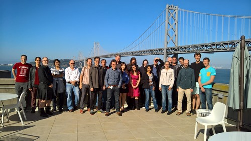

Cascading Style Sheets (CSS) is a core language of the open web platform, and is used for adding style (e.g., fonts, colors, spacing) to Web documents.
These pages contain information on how to learn and use CSS and on available software. They also contain news from the CSS working group.
For more news, see our syndicator “The Future of Style.”
Some of the specifications and drafts by the CSS Working Group:
The working group regularly publishes reports on its blog; here are the most recent:

A part of the CSS WG in May 2016.
The most direct way to contribute is to get an account on GitHub and raise issues in the repository of CSS editors' drafts. There is also a repository for ‘Houdini’ APIs.
The <www-style@w3.org> mailing list contains the agenda and the minutes of meetings of the CSS working group. Everybody can subscribe (or unsubscribe, or see instructions.)
If you work for a W3C member organization, you can also join the working group.
Nearly all browsers nowadays support CSS and many other applications do, too. To write CSS, you don't need more than a text editor, but there are many tools available that make it even easier.
Of course, all software has bugs, even after several updates. And some programs are further ahead implementing the latest CSS modules than others. Various sites describe bugs and work-arounds.
For beginners, Starting with HTML + CSS teaches how to create a style sheet. For a quick introduction to CSS, try chapter 2 of Lie & Bos or Dave Raggett's intro to CSS. Or see examples of styling XML and CSS tips & tricks.
Another page also has some books, mailing lists and similar fora, and links to other directories.
The history of CSS is described in chapter 20 of the book Cascading Style Sheets, designing for the Web, by Håkon Wium Lie and Bert Bos (2nd ed., 1999, Addison Wesley, ISBN 0-201-59625-3)